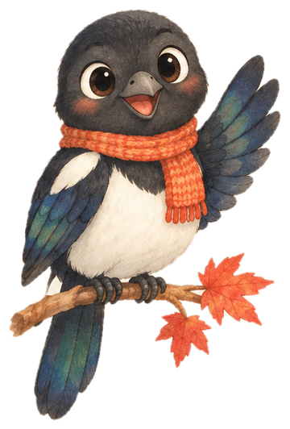

오늘 나들이
안녕하세요! 나들이 친구 까치예요.
오늘 어디로 나들이 가 볼까요?
톡 눌러서 깨워 주세요.
깨우면 오늘 나들이를 같이 찾아요.
문화가 있는, 나의 하루

“내일 오후에 종로에서 전시 보고 싶어요.”
음성을 듣고 있어요
로그인 없이 이 브라우저에만 저장돼요. 다른 기기에는 이어지지 않아요.
체험을 시작하면 이 브라우저에 장소를 저장할 수 있어요.
가입 없이 한 번에 시작해요
다른 기기에는 이어지지 않아요.
저장한 장소와 체험 기록이 이 브라우저에서 모두 지워져요. 되돌릴 수 없어요.